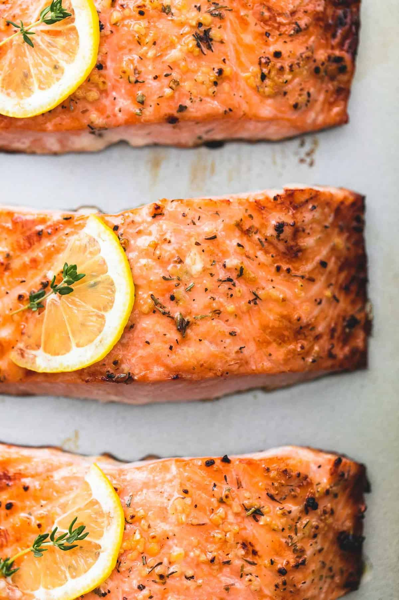

Easy Baked Salmon

Description
This is the very best, Easy Healthy Baked Salmon! Made with lemon and garlic for incredible flavor and baked in the oven for flaky tenderness, this tasty salmon recipe is the answer to busy nights and special occasions alike!
Ingredients
- 4 salmon fillets - about 6 ounces each
- 2 tablespoons olive oil
- 1/2 teaspoon salt - or to taste
- 1/4 teaspoon cracked black pepper
- 2 teaspoons minced garlic
- 1 teaspoon Italian herb seasoning blend
- 1 medium lemon
Steps
- Preheat oven to 400 degrees and grease a large baking pan. Arrange salmon fillets on the baking sheet and season generously with salt and pepper.
- Stir together olive oil, garlic, herbs, and juice of 1/2 lemon. Spoon over salmon fillets being sure to rub all over the tops and sides of the salmon so it has no dry spots. Thinly slice remaining 1/2 of lemon and top each piece of salmon with a slice of lemon.
- Bake for 15-18 minutes until salmon is opaque and flaky when pulled apart with a fork. You can broil the last 1-2 minutes if desired.
- Garnish with fresh thyme or parsley if desired and serve.